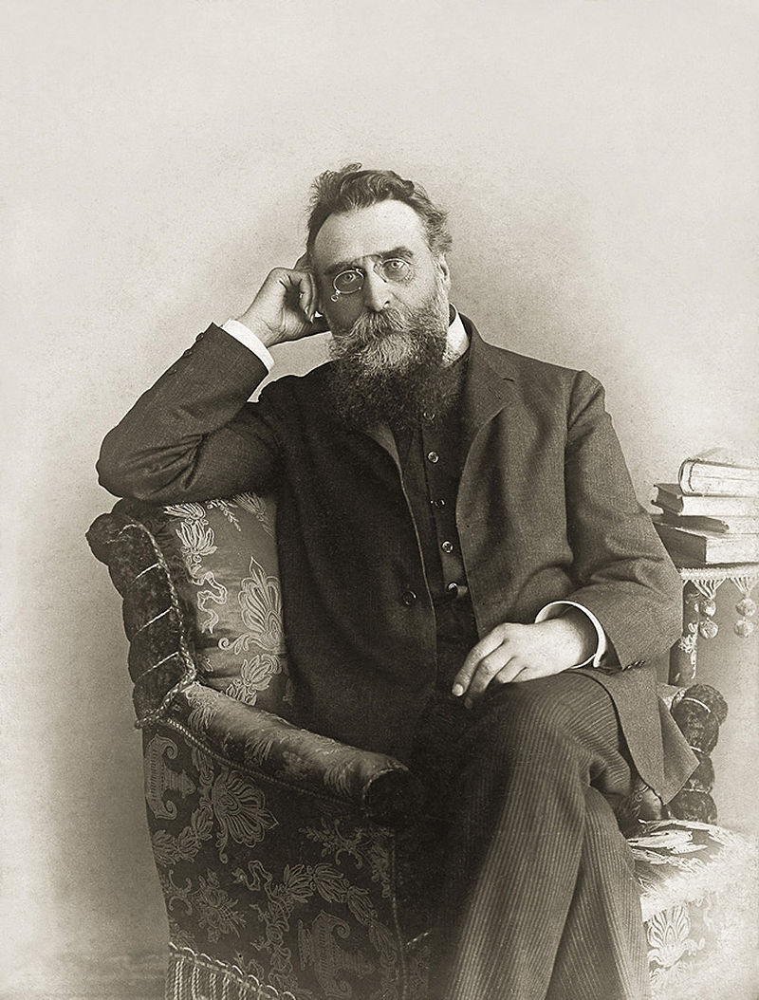
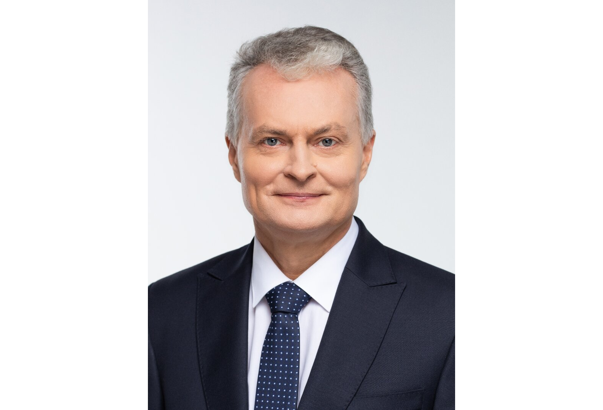

KorCo
Mūsų šūkis: Daryk darbus laiku!
Misija: Informuoti apie komunikacijos filosofiją ir įžymybes
Vizija: Tapti komunikacijos filosofijos ekspertais

Nariai
Ivan Korolkov
Straipsnis
Kaip „Uodega vizgina šunį" apverčia realybę. Filmas „Uodega vizgina šunį" (angl. Wag the Dog) yra satyrinis politinis trileris, kuris atskleidžia, kaip žiniasklaida gali būti naudojama manipuliuoti visuomene. Filmą režisavo Barry Levinsono, o pagrindinius vaidmenis atlieka Robertas De Niro (Breinas) ir Dustinas Hoffmanas (Stenlis Motssas). Juostoje nagrinėjami melagingų naujienų, viešųjų ryšių ir politinės propagandos mechanizmai, kurie verčia susimąstyti apie šiuolaikinės visuomenės informacijos patikimumą. Siužetas ir pagrindiniai veikėjai Filmas prasideda tuo, kad artėjant Jungtinių Valstijų prezidento rinkimams, kyla seksualinis skandalas, galintis sužaloti prezidento reputaciją ir pakenkti jo perrinkimo galimybėms. Tam, kad atitrauktų visuomenės dėmesį, prezidento patarėjas Breinas pasamdo Holivudo prodiuserį Stenlį Motssą, kuris sukuria fiktyvų karą su Albanija. Išgalvotas konfliktas paverčiasi grandiozine viešųjų ryšių kampanija, kurioje naudojamos surežisuotos scenos, muzika ir netgi suvaidinti pabėgėliai. Breinas yra strategas, žinantis, kaip manipuliuoti masių dėmesiu. Jis apskaičiuoja kiekvieną žingsnį, kad istorija atrodytų įtikinamai. Tuo tarpu Stenlis, patyręs prodiuseris, savo darbą vertina kaip meno formą ir netgi didžiuojasi „karu", kurį jis „sukūrė". Jų duetas atskleidžia, kaip lengva manipuliuoti informacija ir paversti melą „tiesa". Kalbos stilius ir metaforos Filme gausu simbolikos ir metaforų. Pats pavadinimas „Uodega vizgina šunį" atspindi pagrindinę filmo idėją: mažesnė jėga (uodega) gali valdyti didesnę (šunį). Tai taikliai iliustruoja, kaip maža informacinės kampanijos detalė gali sukurti milžinišką poveikį visuomenei. Pavyzdžiui, scena, kurioje Stenlis kuria „išgelbėtos pabėgėlės" istoriją, parodo, kaip Holivudo technologijos gali paversti bet kokią fantaziją realybe. Realybė ir fikcija susilieja, kai žiniasklaida ima transliuoti melagingą žinutę kaip tiesą, o visuomenė „praryja" ją nekritiškai. Kritika ir aktualumas šiuolaikinei visuomenei „Uodega vizgina šunį", nors sukurtas 1997 metais, yra itin aktualus ir šiandien. Filmas parodo, kaip politikai ir žiniasklaida gali manipuliuoti masių nuomone tam, kad pasiektų savo tikslus. Socialinių tinklų eroje tokie procesai tik paspartėjo - netikros naujienos, deepfake technologijos ir algoritmai daro įtaką tam, kuo tikime ir ką laikome tiesa. Šis filmas taip pat siunčia įspėjimą - mes, kaip visuomenė, turime būti kritiški ir gebėti atskirti melą nuo tiesos. Kitaip tapsime pasyviais stebėtojais, kuriuos lengva manipuliuoti. Rekomendacija Filmas „Uodega vizgina šunį" yra privalomas tiems, kurie domisi politika, žiniasklaidos galia ir visuomenės manipuliavimo metodais. Tai ne tik pramoginis filmas, bet ir gili satyra, verčianti susimąstyti apie tai, kiek iš tiesų galime pasitikėti tuo, ką matome ekranuose.
Įžymybės
Jonas Basanavičius (Miręs)
Jonas Basanavičius (1851–1927) – lietuvių visuomenės veikėjas, Nepriklausomybės akto signataras, gydytojas, tautosakininkas, vienas laikraščio Aušra (Auszra) steigėjų, Lietuvių mokslo draugijos įkūrimo iniciatorius. Jonas Basanavičius – lietuvių tautinio atgimimo simbolinė figūra, dažnai vadinamas „tautos patriarchu“.
Gitanas Nausėda (Gyva)
Nausėda Gitanas 1964 05 19Klaipėda, lietuvių ekonomistas, finansų analitikas, dešimtasis ir vienuoliktasis Lietuvos Respublikos prezidentas (nuo 2019, 2024 perrinktas). Daktaras (socialiniai mokslai, 1993). Japonijos Gifu universiteto garbės daktaras (2019)..